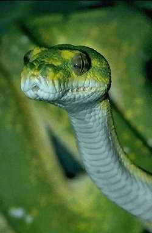

The most noticeable feature of a reptile is the scales that cover its body. Although reptiles breathe with their lungs, some reptiles can also absorb the oxygen in water through membranes in their mouths. Reptiles are often called cold-blooded because they can't regulate their own body temperatures. A reptile's body temperature depends on the temperature of its environment.
Crocodiles and alligators are large amphibious reptiles. They can walk on land by using their webbed feet. They can also use their long tails to swim in water. Crocodiles feed on large animals they catch on land or in water, using their powerful jaws and teeth to tear apart their prey.
Lizards and snakes are the largest group of reptiles. A lizard is a four-legged animal with a long tail. Many lizards can shed their tails to escape from predators. They can then grow a new tail. Some lizards, such as the chameleon, can change colors to blend into their environment. This camouflage helps to protect them from predators.
Snakes don't have limbs. They move by slithering along the ground. Some snakes are poisonous, or venomous, such as the rattlesnake, the cobra, and the eastern green mamba. They have fangs that they use both to bite their prey and to inject poison into the victim. Other snakes, such as the boa constrictor and the python, kill their prey by crushing it. Most snakes can dislocate their jaws, allowing them to swallow prey much larger than themselves.
